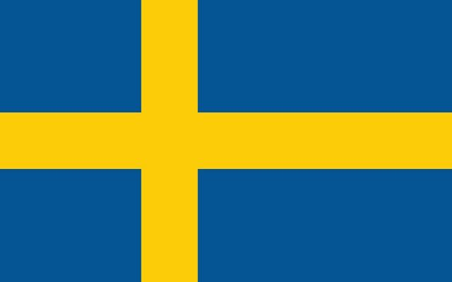
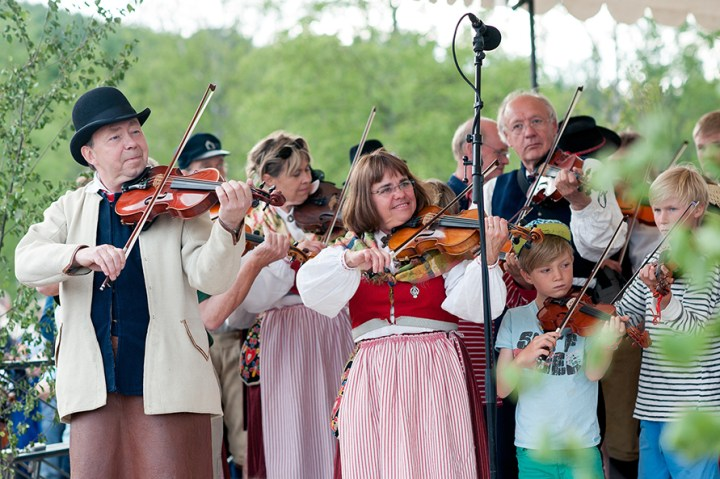

A Suécia é uma nação escandinava com milhares de ilhas costeiras e lagos interiores, além de vastas florestas boreais e montanhas glaciais. Suas principais cidades, a capital Estocolmo, ao leste, e Gotemburgo e Malmö, ao sudoeste, são todas costeiras. Estocolmo é composta por 14 ilhas e tem mais de 50 pontes, além da cidade medieval de Gamla Stan, palácios reais e museus, como o Skansen, ao ar livre.
"*Suécia é um país europeu da região da Escandinávia.
*Sua capital é a cidade de Estocolmo.
*É banhado pelo Báltico e faz fronteira com a Noruega e a Finlândia.
*Seus climas predominantes são o temperado e subártico.
*Seu relevo é formado predominantemente por colinas e morros.
*Possui inúmeros rios, lagos e geleiras.
*Nele vivem mais de 10,1 milhões de pessoas, a maioria delas concentrada na região sul.
*Trata-se de um país urbanizado. A maior cidade é a capital, com 1,6 milhão de habitantes.
*Sua economia é uma das mais desenvolvidas do mundo. Baseia-se no setor terciário e na indústria de precisão.
*É membro da União Europeia, mas não adota o euro como moeda oficial.
*Apresenta ótimos índices de qualidade de vida."
A cultura da Suécia é bastante rica e diversa, influenciada pelos costumes e tradições dos povos originários da Escandinávia, de outros países europeus e também dos imigrantes oriundos de diversas partes do mundo e que lá vivem. Além dos suecos, a população do país é composta por sírios, iraquianos, finlandeses e pessoas de outras nacionalidades. O sueco é o idioma oficial falado em todas as regiões, enquanto o finlandês, romani, iídiche, meänkieli e sámi são considerados idiomas minoritários oficiais.
Entre as celebrações tradicionais estão o Festival de Verão (Midsummer), o Walpurgis, de origem pagã e que festeja a chegada da primavera, o Natal e o Dia Nacional da Suécia, que acontece todos os anos, em 6 de junho. A música é uma importante manifestação cultural da Suécia, que apresenta nomes de grande reconhecimento internacional, sendo o grupo ABBA, formado na década de 1970, o mais famoso deles, bem como estilos e ritmos característicos do país, como o folk e o metal com seus subgêneros. A Suécia tem ampla tradição também na dança, no teatro e na literatura."
A Seleção Sueca de Futebol representa a Suécia nas competições de futebol da Federação Internacional de Futebol. Tem como arena nacional o estádio Friends Arena em Solna, situada ao norte do centro da capital Estocolmo.